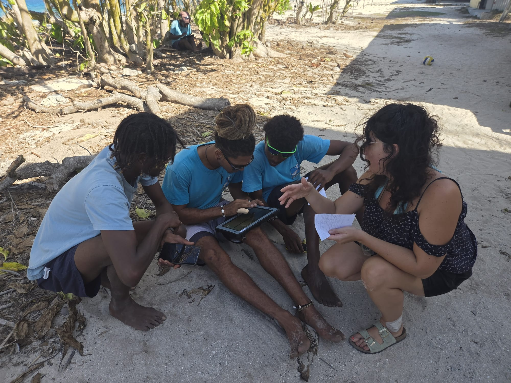
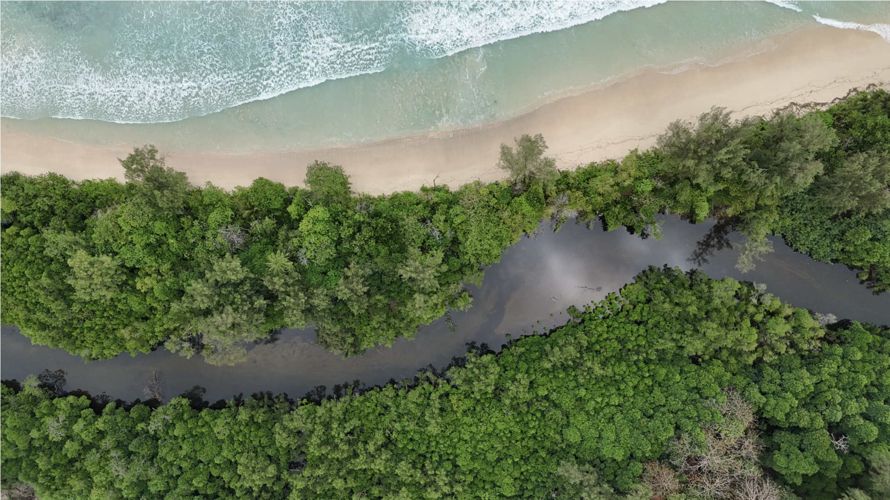
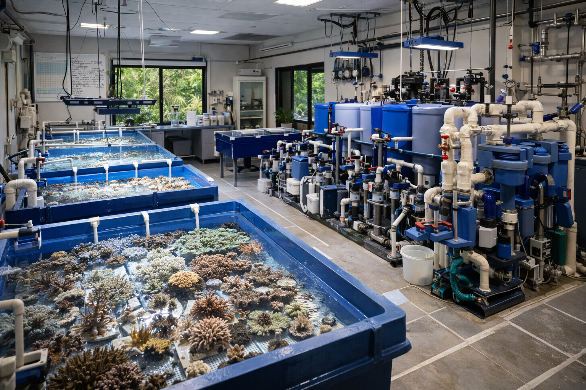

Technology for Wildlife Conservation
Mobile apps and digital tools that help protect wildlife, support field research, and empower communities to participate in conservation
See How We Can HelpThe challenges you face
Remote locations with no internet
Field teams need tools that work offline and sync when back online
Paper data is hard to manage
Converting field notes to digital reports takes too much time
Communities want to help
Local people need simple tools to participate in conservation
Generic apps don't fit your needs
Off-the-shelf software doesn't match your specific workflows
Custom Solutions for Conservation Challenges
We build mobile apps and digital systems specifically designed for conservation work—tools that work in the field, are easy to use, and fit your exact needs.
Field Data Collection Apps
Custom apps for collecting wildlife observations, habitat data, and research information. Works completely offline and syncs automatically when you have internet.
- Works without internet connection
- GPS tracking and mapping
- Photo and audio recording
- Custom forms for your workflows
Common use cases span wildlife surveys, habitat monitoring, and research data collection across different species and ecosystems. Key benefits include faster data entry in the field, elimination of transcription errors from paper forms, and real-time insights that support immediate decision-making. Development typically takes 3-6 months depending on complexity. An effective field data app is customized to your exact workflows, works reliably offline in remote conditions, and makes data collection faster than paper while ensuring data quality through built-in validation.
Discuss Your ProjectCitizen Science Platforms
Easy-to-use apps that let community members, tourists, and volunteers contribute to conservation research. Available in local languages.
- Simple interface for non-experts
- Serves as an outreach and education tool
- Photo submissions with location
- Data validation and quality control
Citizen science significantly increases community engagement and local ownership of conservation efforts. Community members can reliably collect observation data, photo documentation, location-based records, and environmental indicators when given the right tools. Essential accessibility features include full offline capability for areas without connectivity, multilingual interfaces in local languages, and simplified workflows that don't require technical training. The measurable impact includes broader geographic coverage, increased monitoring frequency, stronger community buy-in for conservation initiatives, and valuable educational opportunities for participants.
Discuss Your ProjectWildlife Digital Tracking
Track animal movements and monitor protected areas using tracking devices and mapping technology. Get alerts when animals enter or leave specific zones.
- Real-time location monitoring
- Geofencing with automatic alerts
- Long battery life (months/years)
- Can be implemented in remote areas
Digital tracking provides crucial insights into animal movement patterns, habitat use, and behavior that would be impossible to gather through observation alone. Geofencing creates virtual boundaries around specific areas, such as protected zones, nesting sites, or areas with human, wildlife conflict risk. When an animal crosses these boundaries, you receive instant alerts, enabling rapid response to potential threats or concerning movements. This is invaluable for preventing animals from entering dangerous areas like roads or human settlements, monitoring whether individuals are staying within protected habitats, and understanding how animals use different parts of their range throughout the day or season. Real-time location data helps conservation teams make informed decisions quickly, whether that's adjusting management strategies, investigating sudden changes in movement patterns, or responding to wildlife emergencies before situations escalate.
Discuss Your ProjectData Management & Reporting
Turn field data into useful insights with automated reports, data visualization, and secure cloud storage. Share reports with funders and stakeholders easily.
- Automatic report generation
- Real-time charts and data visualization
- Secure cloud backup
- Export to Excel, PDF, or other formats in one click
Common report types include donor/funder reports with key metrics and outcomes, scientific summaries for research publications, compliance documentation for regulatory requirements, and internal dashboards for team coordination. Data security includes encrypted cloud storage with automatic backups, role-based access controls, and audit trails of who accessed what data. Stakeholder permissions can be customized so field staff, managers, researchers, and funders each see appropriate data levels. Seamless integration with field data collection apps means reports auto-populate with fresh data, eliminating manual compilation and reducing reporting time from days to minutes.
Discuss Your ProjectFacility Management Systems
Digital systems for managing breeding programs, nurseries, rehabilitation centers, and research facilities. Track individual animals, maintenance, and daily operations.
- Individual animal/plant tracking
- Maintenance scheduling
- Health and breeding records
- Equipment and supply management
Core modules include individual animal/plant tracking with unique IDs and life histories, inventory management for supplies and equipment, maintenance scheduling for tanks/enclosures/systems, and detailed health and breeding records. Systems scale from small rescue centers with dozens of individuals to large breeding facilities with thousands of specimens. Compliance and record-keeping benefits include audit-ready documentation, historical trends for regulatory reporting, and standardized data collection across staff members. Long-term data analysis reveals program improvement opportunities like optimal breeding conditions, mortality patterns, and resource allocation efficiency.
Discuss Your ProjectTraining & Ongoing Support
Complete training for your team plus ongoing technical support to keep everything running smoothly. We don't just deliver software—we make sure your team can use it.
- On-site staff training
- User manuals and guides
- Remote technical support
- Updates and improvements
Technology only works if people use it. Our training programs are tailored to your team's skill level to ensure long-term success. Training delivery includes hands-on field training sessions where staff learn by doing, remote video training for distributed teams, and comprehensive user documentation with screenshots and step-by-step guides. Support response times are typically within 24 hours for questions and issues, with critical bug fixes prioritized immediately. Ongoing maintenance plans include regular software updates, security patches, feature enhancements based on user feedback, and performance optimization. The capacity building approach focuses on empowering your team to handle routine troubleshooting independently through train-the-trainer sessions, troubleshooting guides, and building internal champions who can support their colleagues.
Discuss Your ProjectHow We Work With You
Understand Your Needs
We talk with your team to understand your workflows, challenges, and what you're trying to achieve
Design the Solution
We create a custom system that fits your specific needs and get your feedback
Build & Test
We develop the app, test it with your team, and refine based on real use
Train & Launch
We train your staff and support you during rollout and beyond
Real Projects, Real Results

Complete Reserve Management System
Nature Seychelles • Cousin Island
The Challenge: Field staff needed to track 11 different conservation activities—all on paper forms that took hours to transcribe.

Community Environmental Monitoring
Project details temporarily confidential • client and location withheld
The Challenge: Local communities wanted to participate in environmental monitoring but needed a tool that non-experts could use without specialized training.
Automated Tortoise Tracking
Nature Seychelles • Cousin Island
The Challenge: The reserve conservation team needed to track Aldabra giant tortoises across the entire reserve year-round.

AI-generated pictureConservation Facility Management System
Project details temporarily confidential • client and location withheld
The Challenge: A conservation facility needed a digital system to track specimens, manage routine maintenance tasks, and monitor conditions across multiple units. Paper-based tracking was inefficient and made it difficult to stay on top of schedules.
Who We Work With
Conservation Organizations
NGOs, wildlife trusts, marine reserves, and protected area managers who need custom tools for their specific conservation work
Research Teams
Academic researchers, field biologists, and universities conducting long-term wildlife studies and population monitoring
Community Groups
Local environmental initiatives, community conservation projects, and citizen science programs engaging the public
Ready to Improve Your Conservation Work?
Let's talk about your specific needs and how we can build the right solution for you.
Get in Touch
Tell us about your project and we'll get back to you within 24 hours.